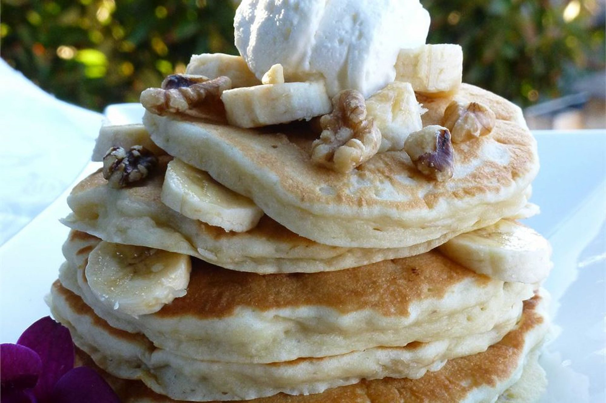

Banana Pancakes

Crowd pleasing banana pancakes made from scratch.
A fun twist on ordinary pancakes.
Ingredients
- 1 cup all-purpose flour
- 1 tablespoon white sugar
- 2 teaspoons baking powder
- ¼ teaspoon salt
- 1 egg, beaten
- 1 cup milk
- 2 tablespoons vegetable oil
- 2 ripe bananas, mashed
Steps
- Combine flour, white sugar, baking powder and salt.
- In a separate bowl, mix together egg, milk, vegetable oil and bananas.
- Stir flour mixture into banana mixture; batter will be slightly lumpy.
- Heat a lightly oiled griddle or frying pan over medium high heat.
- Pour or scoop the batter onto the griddle,
using approximately 1/4 cup for each pancake.
- Cook until pancakes are golden brown on both sides.
- Serve hot.